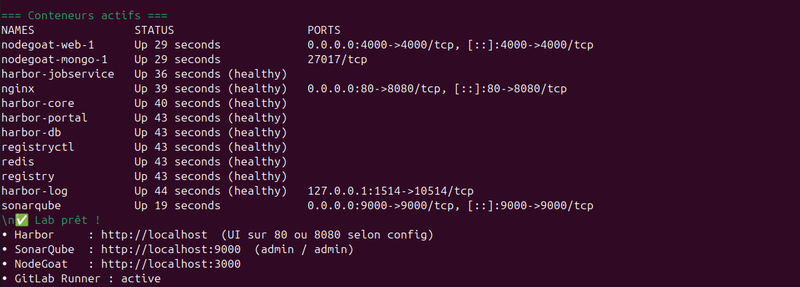

1 · Prérequis
- VirtualBox 6.x ou supérieur
- 8 Go de RAM, 2 vCPU, 40 Go d’espace disque
- Fichier OVA : Devsecops-Lab.ova (≈ 6 Go)
Ces prérequis garantissent que la VM pourra lancer Docker, GitLab et les scans sans ralentissement.
2 · Importation de la VM
-
Dans VirtualBox, ouvrez
File ▸ Import Appliance.Le menu “Import” permet de déployer rapidement une image OVA pré-configurée.
-
Sélectionnez
Devsecops-lab.ovapuis cliquez sur Import.# Exemple de chemin (Windows) C:\Users\<vous>\Downloads\Devsecops-lab.ova
-
Une fois la VM créée, démarrez-la.
Identifiants :
username : osboxes
password : osboxes.orgVous arrivez sur un Linux allégé avec Docker, GitLab Runner et les outils de scan pré-installés.
3 · Lancer et arrêter le lab automatiquement
Les scripts sont déjà présents dans la VM :
start_services.sh pour démarrer /
stop_services.sh pour arrêter.
Commande :
$ ./start_services.sh
Résultat attendu :
Pour fermer proprement :
$ ./stop_services.sh